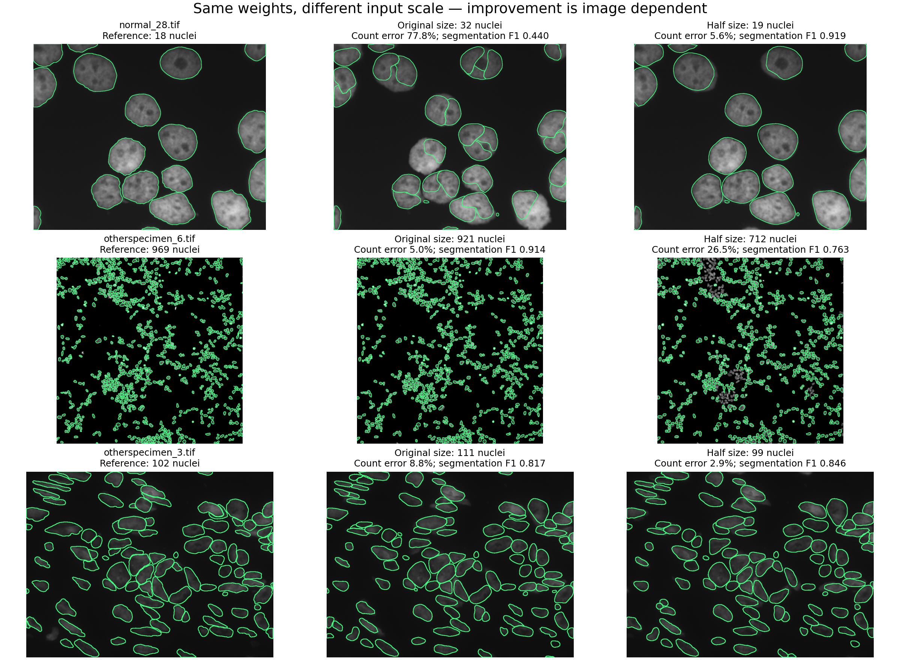

22 September 2026 · 37 official Kromp test images · three fresh repeats
StarDist was running correctly.
Our scoring and scale assumptions needed correction.
What we checked
- Official model archive SHA256, pinned weights, configuration and thresholds all match. The original TIFF pixels exactly equal every channel of the PNG supplied to the worker, for all 37 images.
- 555 fresh native StarDist executions: original-size default/sensitive/conservative, half-size default and quarter-size default; three complete repetitions each. No reference labels were read by inference, and no Astra/Jev API calls were made in this audit.
- 333/333 native unscaled masks exactly match the saved worker masks, pixel for pixel. There is no evidence of a model-loading, channel-conversion or worker-inference defect in those checks.
- StarDist's own instance matcher reproduces all 444 previous TP/FP/FN calculations using the original labels. That verifies the matching implementation, not the validity of those labels.
- All five native variants produce identical masks across their three repeats on all 37 images. This establishes repeatability here; it does not establish accuracy or general determinism across hardware/software.
The actual scoring bug: 55 IDs represented 102 nuclei
In otherspecimen_3.tif, 47 of 55 positive IDs each label two disconnected regions. The TIFF has 102 per-ID connected regions, with no tiny fragments. We previously equated unique IDs with nuclei. Repeating that assumption through a second TIFF reader did not validate it.
The dataset paper reports 102 nuclei for the sole Wilms image. The published SVG contains 110 elements: six duplicate contours reduce this to 104 distinct shapes; 102 map one-to-one onto the TIFF regions, while two additional SVG contours are absent from the TIFF. We use the released TIFF's 102 regions, supported by this correspondence and the paper. The corrected instance map preserves every foreground pixel.

StarDist's prediction of 111 on this image therefore has 8.82% count error, not 101.82%. This is a reference repair, not an inference improvement. We also report a 36-image analysis excluding this field and a 104-count SVG sensitivity analysis below.
We audited all 37 masks. One other mask, Ganglioneuroblastoma_8.tif, has two fragments smaller than five pixels belonging to an existing instance; its 183-ID count is preserved. Splitting every disconnected region blindly would introduce another error. Vector correspondence · Original connectivity audit.
Corrected results: same 37 images, same saved predictions
Mean count error is MAPE: calculate absolute percentage error per image/attempt, then average. For arms with missing answers it is conditional on returned counts. “Within 10%” uses all scheduled attempts and counts missing answers as failures. Segmentation F1 measures one-to-one object matches at mask overlap IoU ≥ 0.5; higher is better. No LLM segmentation score is invented.
| Arm | Counts | Mean count error ↓ | Within 10% ↑ | Mean segmentation F1 ↑ |
|---|---|---|---|---|
| Vanilla Astra | 107/111 | 8.57% | 78/111 (70.3%) | — |
| Astra + preferred specialist | 98/111 | 17.87% | 57/111 (51.4%) | — |
| Astra + Jev selection stage | 101/111 | 14.14% | 65/111 (58.6%) | — |
| Full v1 harness | 101/111 | 14.14% | 65/111 (58.6%) | — |
| Strict-support diagnostic | 4/111 | 12.32% | 2/111 (1.8%) | — |
| Original StarDist default | 111/111 | 23.29% | 63/111 (56.8%) | 0.807 |
| Original StarDist sensitive | 111/111 | 30.00% | 57/111 (51.4%) | 0.793 |
| Original StarDist conservative | 111/111 | 15.01% | 72/111 (64.9%) | 0.818 |
| Original Cellpose-SAM | 111/111 | 11.40% | 81/111 (73.0%) | 0.890 |
| Astra-preferred measurement only | 111/111 | 28.37% | 57/111 (51.4%) | — |
| Jev-selected measurement only | 111/111 | 21.92% | 65/111 (58.6%) | — |
| Native StarDist conservative | 111/111 | 15.01% | 72/111 (64.9%) | 0.818 |
| Native StarDist, original size | 111/111 | 23.29% | 63/111 (56.8%) | 0.807 |
| Native StarDist, half size (diagnostic) | 111/111 | 10.57% | 72/111 (64.9%) | 0.869 |
| Native StarDist, quarter size (diagnostic) | 111/111 | 16.66% | 54/111 (48.6%) | 0.771 |
| Native StarDist sensitive | 111/111 | 30.00% | 57/111 (51.4%) | 0.793 |
Scale matters, but routing is still unproven. Half-size input improves default StarDist's mean count error from 23.29% to 10.57%. The original full v1 harness scores 65/111 within 10% (58.6%), not the previously quoted 62/111 (55.9%). Vanilla remains 78/111 (70.3%). These scale variants were not available to the original router. The new v2 router has not been evaluated on a new cohort.
Three repeats do not create 111 independent images. Fixed-model masks and errors are identical across repetitions. All three run averages and SD · Complete corrected metrics, image-cluster intervals and records.
Sensitivity: exclude the repaired image (36 images × three repeats)
| Arm | Counts | Mean count error ↓ | Within 10% ↑ | Mean segmentation F1 ↑ |
|---|---|---|---|---|
| Vanilla Astra | 104/108 | 8.35% | 78/108 (72.2%) | — |
| Astra + preferred specialist | 95/108 | 18.06% | 57/108 (52.8%) | — |
| Astra + Jev selection stage | 98/108 | 14.30% | 62/108 (57.4%) | — |
| Full v1 harness | 98/108 | 14.30% | 62/108 (57.4%) | — |
| Strict-support diagnostic | 4/108 | 12.32% | 2/108 (1.9%) | — |
| Original StarDist default | 108/108 | 23.69% | 60/108 (55.6%) | 0.807 |
| Original StarDist sensitive | 108/108 | 30.51% | 57/108 (52.8%) | 0.793 |
| Original StarDist conservative | 108/108 | 15.26% | 69/108 (63.9%) | 0.818 |
| Original Cellpose-SAM | 108/108 | 11.61% | 78/108 (72.2%) | 0.890 |
| Astra-preferred measurement only | 108/108 | 28.83% | 57/108 (52.8%) | — |
| Jev-selected measurement only | 108/108 | 22.29% | 62/108 (57.4%) | — |
| Native StarDist conservative | 108/108 | 15.26% | 69/108 (63.9%) | 0.818 |
| Native StarDist, original size | 108/108 | 23.69% | 60/108 (55.6%) | 0.807 |
| Native StarDist, half size (diagnostic) | 108/108 | 10.78% | 69/108 (63.9%) | 0.869 |
| Native StarDist, quarter size (diagnostic) | 108/108 | 16.50% | 54/108 (50.0%) | 0.772 |
| Native StarDist sensitive | 108/108 | 30.51% | 57/108 (52.8%) | 0.793 |
Sensitivity: use all 104 distinct SVG contours as the disputed count
This does not change the other 36 references. Only count metrics are presented because the two additional vector shapes are absent from the released TIFF.
| Arm | Counts | Mean count error ↓ | Within 10% ↑ | Mean segmentation F1 ↑ |
|---|---|---|---|---|
| Vanilla Astra | 107/111 | 8.61% | 78/111 (70.3%) | — |
| Astra + preferred specialist | 98/111 | 17.80% | 60/111 (54.1%) | — |
| Astra + Jev selection stage | 101/111 | 14.07% | 65/111 (58.6%) | — |
| Full v1 harness | 101/111 | 14.07% | 65/111 (58.6%) | — |
| Strict-support diagnostic | 4/111 | 12.32% | 2/111 (1.8%) | — |
| Original StarDist default | 111/111 | 23.23% | 63/111 (56.8%) | — |
| Original StarDist sensitive | 111/111 | 29.95% | 60/111 (54.1%) | — |
| Original StarDist conservative | 111/111 | 14.95% | 72/111 (64.9%) | — |
| Original Cellpose-SAM | 111/111 | 11.45% | 81/111 (73.0%) | — |
| Astra-preferred measurement only | 111/111 | 28.31% | 60/111 (54.1%) | — |
| Jev-selected measurement only | 111/111 | 21.87% | 65/111 (58.6%) | — |
| Native StarDist conservative | 111/111 | 14.95% | 72/111 (64.9%) | — |
| Native StarDist, original size | 111/111 | 23.23% | 63/111 (56.8%) | — |
| Native StarDist, half size (diagnostic) | 111/111 | 10.62% | 72/111 (64.9%) | — |
| Native StarDist, quarter size (diagnostic) | 111/111 | 16.70% | 54/111 (48.6%) | — |
| Native StarDist sensitive | 111/111 | 29.95% | 60/111 (54.1%) | — |
See where scale helps—and where it hurts
Green boundaries show the reference or predicted instances. The same complete image is shown in each row. Half-size inference maps predictions back to original coordinates. These three illustrative fields were chosen after scoring; the complete cohort is listed below.

The StarDist authors recommend checking image scale when large nuclei are split. Our original candidates varied only the detection threshold and all used the original size. That omitted a meaningful condition of use. Uniform quarter-size input is worse overall than half-size input; the correct policy cannot simply be “always shrink more.”
All 37 images, including failures
The three StarDist counts shown are identical in all three fresh repeats. Vanilla and full v1 show each saved repetition separately.
| Image | Reference | Default | Half | Quarter | Vanilla, three counts | Full v1, three counts |
|---|---|---|---|---|---|---|
| Ganglioneuroblastoma_10.tif | 38 | 58 | 47 | 36 | 28, 27, 30 | 58, 58, 58 |
| Ganglioneuroblastoma_4.tif | 363 | 439 | 401 | 260 | 345, 350, 360 | 439, 439, 439 |
| Ganglioneuroblastoma_6.tif | 75 | 86 | 71 | 76 | 37, 52, 48 | 86, 93, 86 |
| Ganglioneuroblastoma_7.tif | 585 | 756 | 654 | 342 | 550, 560, 520 | 799, 799, 756 |
| Ganglioneuroblastoma_8.tif | 183 | 268 | 236 | 177 | 160, 175, 150 | 268, 268, 268 |
| Ganglioneuroblastoma_9.tif | 83 | 85 | 77 | 54 | 58, 58, 60 | 85, 85, 85 |
| Neuroblastoma_12.tif | 22 | 36 | 36 | 27 | 21, 21, 22 | 32, 36, 28 |
| Neuroblastoma_13.tif | 13 | 36 | 18 | 15 | 13, 13, 12 | missing, missing, missing |
| Neuroblastoma_14.tif | 59 | 66 | 61 | 56 | 57, 54, 55 | 66, 66, 66 |
| Neuroblastoma_15.tif | 124 | 167 | 138 | 120 | 140, 136, 140 | 172, 167, 167 |
| Neuroblastoma_16.tif | 16 | 15 | 14 | 14 | 10, 9, 10 | 15, 15, 13 |
| Neuroblastoma_17.tif | 12 | 13 | 12 | 12 | 10, 10, 10 | 13, 13, 13 |
| normal_26.tif | 32 | 33 | 29 | 28 | 32, 32, 31 | 33, 33, 33 |
| normal_27.tif | 31 | 37 | 37 | 34 | 31, 31, 31 | 34, 37, 37 |
| normal_28.tif | 18 | 32 | 19 | 17 | 18, 18, 18 | missing, missing, missing |
| normal_29.tif | 23 | 24 | 24 | 23 | 23, 23, 23 | 24, 24, 24 |
| normal_30.tif | 41 | 49 | 41 | 41 | 40, 41, 40 | 49, 49, 49 |
| normal_31.tif | 22 | 23 | 21 | 19 | 21, 20, 20 | 23, 23, 23 |
| normal_32.tif | 34 | 48 | 33 | 31 | 33, 34, 33 | 48, 48, 48 |
| normal_33.tif | 23 | 34 | 24 | 23 | 23, 23, 23 | 24, missing, 34 |
| normal_34.tif | 833 | 817 | 796 | 260 | 770, 770, 760 | 817, 817, 817 |
| normal_35.tif | 68 | 66 | 64 | 62 | 63, 65, 63 | 66, 66, 66 |
| normal_36.tif | 67 | 63 | 59 | 55 | missing, 63, missing | 63, 65, 63 |
| normal_37.tif | 66 | 70 | 63 | 63 | 61, 62, 60 | 70, 70, 70 |
| normal_38.tif | 75 | 77 | 75 | 73 | missing, missing, 73 | 77, 77, 77 |
| normal_39.tif | 66 | 68 | 68 | 66 | 63, 62, 63 | 68, 68, 68 |
| normal_40.tif | 71 | 71 | 70 | 69 | 59, 58, 61 | 71, 71, 71 |
| otherspecimen_0.tif | 24 | 30 | 25 | 23 | 24, 24, 23 | 30, 25, 30 |
| otherspecimen_1.tif | 265 | 258 | 218 | 120 | 263, 255, 258 | 258, 258, 258 |
| otherspecimen_2.tif | 203 | 205 | 183 | 145 | 186, 180, 180 | 205, 205, 208 |
| otherspecimen_3.tif | 102 | 111 | 99 | 79 | 86, 85, 86 | 111, 111, 111 |
| otherspecimen_4.tif | 100 | 95 | 91 | 83 | 91, 93, 96 | 95, 95, 95 |
| otherspecimen_5.tif | 20 | 37 | 20 | 17 | 21, 21, 20 | missing, missing, missing |
| otherspecimen_6.tif | 969 | 921 | 712 | 92 | 1000, 900, 850 | 921, 921, 931 |
| otherspecimen_7.tif | 135 | 144 | 125 | 111 | 137, 135, 138 | 144, 144, 144 |
| otherspecimen_8.tif | 147 | 140 | 131 | 114 | 146, 148, 145 | 140, 140, 140 |
| otherspecimen_9.tif | 125 | 137 | 120 | 107 | 123, 122, 126 | 137, 137, 137 |
What changes next
Keep the original experiment frozen. Use reviewed references, add scale as an explicit specialist parameter, and select or calibrate scale on separate development images. Then freeze that policy and compare vanilla, the fixed specialist and the complete router on new test images over multiple runs. Do not choose a per-image winner using reference counts or present this post-hoc half-size result as held-out validation.
Audit files and reproduction
- Native inference protocol and package versions · Pixel/normalization audit · All 555 fresh inferences
- Independent matching checks · SVG duplicate analysis · Corrected outcomes
- Scripts and reproduction commands · Preserved original report (superseded scores)
No new hosted inference was requested. Source TIFFs, original result JSON and saved predictions are unchanged. No repository was pushed or published.